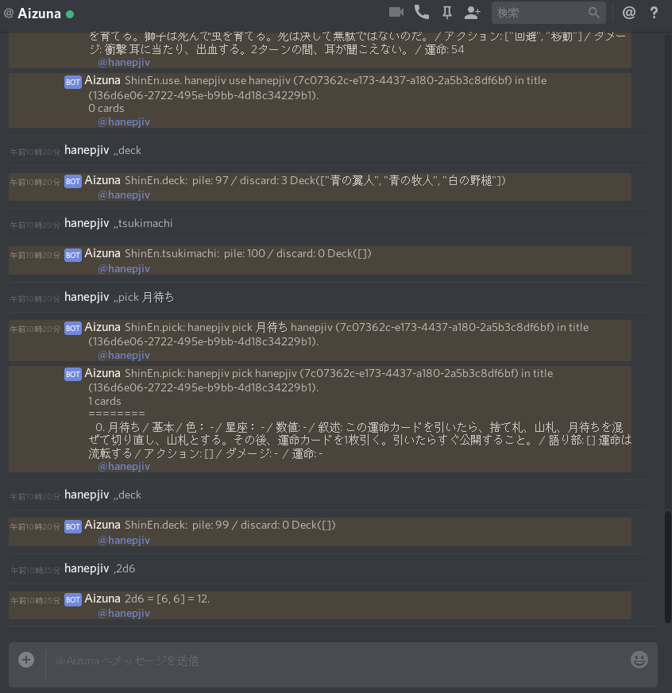

Aizuna 0.1
Aizunaはチャットツール上でテーブルトークRPGを遊ぶための支援ツールです。 サーバとして動作し、チャットと連携して各データを管理します。
名前の由来であるアイズナが示すようにテーブルトークRPG 『深淵』 のカードをチャット上で管理する目的で開発されました。 アイズナは『深淵』でネズミ使いが操る魔力あるネズミの名前です。ネズミ使い自身もアイズナと呼ばれます。
Rust nightlyで記述されています。
Aizuna 0.1 では チャットサービスの Discord を対象として動作します。

Author
- hanepjiv
- mail: hanepjiv@gmail.com
- twitter: @haneojiv
- blog: https://hanepjiv.blogspot.jp/
Repository
https://github.com/hanepjiv/aizuna.git
License
- MIT
- Apache-2.0
機能
- ユーザ管理
- セッション管理
- サイコロ
- 『深淵』
- カード管理
接続
Aizuna 0.1 では 下記の接続で動作します。
- デバッグ コンソール
- Discord
動作環境
- Rust nightly
動作確認環境
- Linux(libc)
依存ライブラリ
Cargo.tomlを参照してくだささい。
Aizuna イントロダクション
実行ファイル の取得
ソースからコンパイルする
Rust nightly 環境の準備
Rustを参照して開発環境(rustup, cargo)を準備してください。
nightly toolchaine をインストールします。
rustup install nightly
GitHub からインストール
GitHubのrepositoryから直接インストールします。
cargo install --git https://github.com/hanepjiv/aizuna.git
ソースコードの入手
GitHubのrepositoryからソースコードを入手します。
git clone https://github.com/hanepjiv/aizuna.git
cd asizuna
インストール
nightlyでコンパイルすることを指示し、cargoコマンドでインストールします。
rustup override set nightly
cargo install
aizuna
インストールをしないで実行
cargo runコマンドでインストールせずに実行することもできます。
rustup override set nightly
cargo run --release
初回起動
設定ファイルの新規作成
初回起動で設定ファイルが無い場合、設定ファイルを新規作成するかを問われます。
create config file? "${HOME}/.config/aizuna/config.toml" [Y/n]:
--root オプションを付与して実行すると設定ファイルを参照するディレクトリを指定できます。 デフォルトでは ${HOME}/.confog/aizuna/ を参照します。
aizuna --root ./
cargo runで起動する場合は次のように指定します。cargo run --release -- --root ./
設定ファイルを新規作成すると、デバッグコンソールのみに接続した状態で起動します。
Console::new: *** Caution! This is a DEBUG console. ***
Console: Spawn
詳しくは、Aizuna 設定を参照してください。
基本コマンド
Aizunaは接頭辞(prefix: デフォルトでは",")から始まる文字列をコマンドとして認識します。
,help
先ずは ",help" コマンドを入力してください。
,help
Console: Whisper:
Aizuna v0.1.0:
,help Print this message.
,user/ ,u Print User info.
,session / ,s Session controll.
,[0-9]*d[0-9]* Dice roll. etc. ,2d6 / ,3d / ,d10
,quit / ,Q Aizuna logout server. Need administrator's authority.
,database Dump database. Need administrator's authority.
入力と出力にプロンプト(" >" のような入力を促す表示)による区別がないことに注意してください。
,d
",d" コマンドでサイコロを振ることが出来ます。
,d
Console: Send: 1d6 = [4] = 4.
,2d6
Console: Send: 2d6 = [3, 4] = 7.
,quit
",quit" コマンド で Aizunaを終了出来ます。
,quit
Console: Exit
その他のコマンドの詳説はAizuna コマンドを参照してください。
Aizuna 用語
Aizunaで使用される用語を解説します。
Uuid
データを識別するための固有のバイト列で、16bytes = 128bit の長さを持ちます。 16進数表記で xxxxxxxx-xxxx-xxxx-xxxx-xxxxxxxxxxxx のように表示されます。
個別に割り当てられ、同種のグループ内では重複が無いことが保証されています。 Aizunaでは重複が無い様にランダムに決定されており、MACアドレス等の固有の識別 情報は含まれていません。
コネクタ
Aizunaはチャット機能を他のサービスに依存しています。 他のサービスとの連携を司る機能をコネクタと呼びます。
デフォルトではデバッグ用のコンソール入出力のみと接続します。
詳しくは、Aizuna 設定 - コネクタを参照してください。
ユーザ
ユーザとは下記の情報を保持する構造を差します。
- Uuid
- ユーザ名
Aizunaは利用者をユーザとして、個別に管理します。 Aizunaにコマンドを送ると自動的にユーザが作成されます。
ユーザはUuidで区別され、コネクタから自動的に参照されたユーザ名を持ちます。
ユーザはコネクタ毎に分断されており、別のコネクタからの接続は別のユーザとして認識されます。
ユーザの情報は,userによって表示されます。
セッション
セッションとは下記の情報を保持する構造を差します。
- Uuid
- タイトル
- 所有者(複数)
- メンバー(複数)
Aizunaは複数のユーザの集まりをセッションとして、個別に管理します。
セッションはUuidで区別され、 所属するユーザを変更の権限を持つ所有者と変更の権限を持たないメンバーとして管理します。
セッションはコネクタ毎に分断されており、 同じコネクタで接続しているユーザ同士のみがセッションを共有できます。
ユーザは,session new によってセッションを自由に複数作成できます。
ユーザの現在のセッション
ユーザの現在のセッションとは、一部のコマンドにおいて、暗黙の内に操作対象となるセッションを差します。
ユーザの現在のセッションは ,session list で * で表示され、 ,session default によって変更できます。
Send / Whisper
Aizunaからの応答はコマンドを打ち込んだチャットに送られる Send と コマンドを打ったユーザのみに送られる Whisper とで区別されます。
Send は同じチャット内にいる他のユーザにも表示されます。
Aizuna 設定
Aizunaの動作は設定ファイルによって制御されます。
Aizuna 起動オプション
aizuna --helpで起動オプションを確認できます。
$ aizuna --help
aizuna v0.1.0
Usage:
aizuna [Options]
Options:
-v, --version print version
-h, --help print this help menu
-R, --root PATH set Aizuna root path. default '${HOME}/.config/aizuna'
Aizuna ルートディレクトリ
設定ファイルが保存されるディレクトリを差します。
デフォルトでは {HOME}/.confog/aizuna/ です。
ルートディレクトリは、Aizuna起動オプション --root / -R で 変更できます。
aizuna --root ./
Aizunaの実行プロセスはルートディレクトリに対してファイルの作成権限を必要とします。
設定ファイル
ルートディレクトリに存在するconfig.tomlという名前の、toml形式のテキストファイルです。
設定ファイルが存在しない場合、自動的に作成されます。
# -*- mode:toml; coding:utf-8-unix; -*-
# /////////////////////////////////////////////////////////////////////////////
# =============================================================================
# aizuna v0.1.0
serdever = 0
greeting = "aizuna v0.1.0"
driver = "Thread"
fringe_stack_size = 1048576
path_db = "./db"
prefix = ","
# /////////////////////////////////////////////////////////////////////////////
# =============================================================================
[connectors.console]
serdever = 0
enable = true
connector = "console"
# =============================================================================
[connectors.discord-00]
serdever = 0
enable = false
connector = "discord"
[connectors.discord-00.config]
serdever = 0
token = "DISCORD_BOT_TOKEN"
# /////////////////////////////////////////////////////////////////////////////
# =============================================================================
[rules.shinen]
serdever = 0
enable = false
prefix = ","
[rules.shinen.config]
serdever = 0
root = "SHINEN_ROOT_PATH"
# /////////////////////////////////////////////////////////////////////////////
# =============================================================================
[admin]
console = [".*"]
discord-00 = ["DISCORD_USER_ID_00", "DISCORD_USER_ID_01"]
serdever =
設定ファイルにはserdever = numberという項目がいくつか存在します。
serdeverは"serialize desserialize version"の略で、 設定ファイルの構成を管理するバージョンを表します。
serdeverは自動的に決定されるので、Aizunaから指示がないかぎり書き換えてはいけません。
セクション
aizuna
greeting =
,greetingコマンドによって、Aizunaが表示する文章です。 自由に書き換えて構いません。
driver =
Aizunaの動作モードを下記の文字列で指定します。デフォルトは"Tread"です。
- "Tread": OSスレッドで動作します。
- "Fringe": libfringeを使用してコルーチンで動作します。
詳しくはAizuna スレッドとコルーチンを参照してください。
fringe_stack_size =
"Fringe"モードで動作する場合のコルーチンのスタックサイズをバイト数で指定します。
デフォルトは1048576(= 1024 * 1024 bytes = 1MB)です。
詳しくはAizuna スレッドとコルーチンを参照してください。
path_db =
Aizunaの情報を保持するデータベースへのパスです。デフォルトは"./db"です。
相対パスを指定した場合、ルートディレクトリからのパスとして認識されます。 絶対パスを指定することも可能です。
データベースはAizunaによって管理されています。データベースの内容を書き換えてはいけません。
prefix =
Aizuna コマンドを識別するための接頭辞です。デフォルトは","です。
prefix = "aizuna-"
このように設定すれば
aizuna-help
aizuna-2d6
このようにコマンドを使用することが出来ます。
[connectors]
外部のチャットサービスと接続するためのコネクタの設定を行います。
コネクタには識別名を決定する必要があります。
自動生成された設定ファイルにはconsoleとdiscord00が設定されています。
[connectors.console]
serdever = 0
enable = true
connector = "console"
[connectors.discord-00]
serdever = 0
enable = false
connector = "discord"
[connectors.discord-00.config]
serdever = 0
token = "DISCORD_BOT_TOKEN"
[connectors.${識別名}]のように記述することでコネクタの設定を開始します。
識別名はユーザの判別に使用され、同一のコネクタ識別名を持つユーザ同士のみがセッションを共有できます。 セッションを作成したコネクタの識別名を書き換えてしまうと、 セッションに接続できなくなってしまう場合があります。 よってコネクタ識別名の変更は推奨されません。
enable =
コネクタを使用するかどうかのbool値です。true, falseで指定します。
falseを指定した場合、そのコネクタは使用されません。
connector =
コネクタの種別を文字列で指定します。
"console": デバックコンソールを使用します。"discord": Discordを使用します。
デフォルトでは[connectors.console]が有効、[connectors.discode00]が無効と設定されています。
実運用環境ではデバックコンソールを無効にし、その他のコネクタを有効化することを推奨します。
Aizunaは全てのコネクタが終了するまで、プロセスを終了しません。,quitを参照してください。
[connectors.${識別名}.config]
コネクタによっては追加の設定が必要となります。
"discord"
Discord 設定を参照してください。
[rules]
Aizunaで使用するゲームのルールを設定します。
ルールは識別名で区別されます。
自動生成された設定ファイルにはshinenが設定されています。
[rules.shinen]
serdever = 0
enable = false
prefix = ","
[rules.shinen.config]
serdever = 0
root = "SHINEN_ROOT_PATH"
[rules.${識別名}]のように記述することでルールの設定を開始します。
enable =
ルールを使用するかどうかのbool値です。true, falseで指定します。
falseを指定した場合、そのルールは使用されません。
prefix =
コマンドでルールを識別する接頭辞を示す文字列です。
[rules.${識別名}.config]
ルールによっては追加の設定が必要となります。
"shinen"
ShinEn 設定を参照してください。
[admin]
コネクタ毎にAizunaの管理者として扱われるユーザを設定します。
${connetor識別名} = ["${Rust正規表現}", "${Rust正規表現}"]
デフォルトではconsole接続が管理者として扱われます。
Discord接続はデフォルトでは無効化されています。 有効化する場合、管理者として扱うDiscordID(数字列)を指定してください
[admin]
console = [".*"]
discord-00 = ["DISCORD_USER_ID_00", "DISCORD_USER_ID_01"]
管理者を設定していないコネクタは、,quitを使用できません。 その場合、Aizunaプロセスを強制終了させなくてはいけないことに注意してください。 タイミングによってはデータベースに書き込みが完了していないデータが消失してしまう可能性があります。 管理者権限を与えるユーザを必ず設定してください。
Aizuna コマンド
Aizunaの機能はチャットによる入力をコマンドとして解釈することで動作します。
Aizunaは接頭辞(prefix: デフォルトでは",")から始まる文字列をコマンドとして認識します。
接頭辞を変更するにはAizuna 設定 prefixを参照してください。
,help
ヘルプメッセージを表示します。
,help
Aizuna v0.1.0:
,help Print this message.
,user / ,u Print User info.
,session / ,s Session controll.
,[0-9]*d[0-9]* Dice roll. etc. ,2d6 / ,3d / ,d10
,quit / ,Q Aizuna logout server. Need administrator's authority.
,quit / ,Q
Aizunaの接続を終了します。
Aizunaの管理者権限が必要です。
,quit
,Q
コマンドを送ったコネクタの接続のみを終了します。
デバッグコンソールとDiscordを同時に起動しているような場合、
その両方が,quitコマンドで終了されるまでAizunaは終了されません。
,greeting
設定ファイルに記述された任意の文章を表示します。
,greeting
Console: Whisper: aizuna v0.1.0
文章を変更するにはAizuna 設定 greetingを参照してください。
,d
サイコロを振り結果を得ます。
,d
Console: Send: 1d6 = [1] = 1.
,2d6
Console: Send: 2d6 = [5, 4] = 9.
正規表現で ,([0-9]*)d([0-9]*) のパターンを受け付け、
maches[1] をサイコロの数 n 、 maches[2] をサイコロの種類 m として認識します。
n が省略された場合、n = 1、m が省略された場合、m = 6 になります。
n の最大値は 99 に制限されます。
,user ,u
ユーザ情報を表示します。
,user
,u
Console: Send: user: Uuid: xxxxxxxx-xxxx-xxxx-xxxx-xxxxxxxxxxxx
,session / ,s
Aizuna セッションを管理します。
,session
,s
{SUB_COMMAND}を省略した場合、,session listが指定されたように動作します。
,session {SUB_COMMAND} {ARGS..}
,s {SUB_COMMAND} {ARGS..}
{SUB_COMMAND}
info
現在のセッションの情報を表示します。
list
セッションの一覧を表示します。
all
閉じたセッションを含むセッションの一覧を表示します。
default
現在のセッションを設定します。
new
セッションを新規作成します。
close
現在のセッションを閉じます。
reopen
閉じられた現在のセッションを再開します。
delete
閉じられた現在のセッションを消去します。
title
現在のセッションのタイトルを変更します。
owner
現在のセッションのメンバーにセッションの所有者権限を与えます。
waiver
現在のセッションの所有者権限を放棄します。
invite
現在のセッションにメンバーを追加します。
kick
現在のセッションからメンバーを除外します。
request
セッションの所持者に参加要求を送ります。
bye
現在のセッションから脱退します。
,session info
現在のセッションの情報を表示します。
,sesssion info
,s info
,session list
自分が参加しているセッションの一覧を表示します。
,sesssion list
,s list
表示の見方については,session allを参照してください。
,session all
閉じたセッションを含む自分が参加しているセッションの一覧を表示します。
,sesssion all
,s all
* o title0 shinen 2018-01-01 12:00 +09:00 xxxxxxxx-xxxx-xxxx-xxxx-xxxxxxxxxxxx
o x title1 shinen 2018-01-01 12:00 +09:00 xxxxxxxx-xxxx-xxxx-xxxx-xxxxxxxxxxxx
o title2 shinen 2018-01-01 12:00 +09:00 xxxxxxxx-xxxx-xxxx-xxxx-xxxxxxxxxxxx
*
自分の現在のセッションに表示されます。
o
自分が所持しているセッションに表示されます。
x
自分が所持している閉じたセッションに表示されます。
文字列
セッションのタイトル。
UTC時刻
セッションの作成日時。
xxxxxxxx-xxxx-xxxx-xxxx-xxxxxxxxxxxx
セッションのUuid。
,session default
現在のセッションを設定します。
,sesssion default {SESSION_UUID}
,s default {SESSION_UUID}
{SESSION_UUID}
現在のセッションに設定するセッションのUuidです。
,session new
セッションを新規作成します。
,sesssion new {RULE_TEXT}
,s new
{RULE_TEXT}
セッションに使用するゲームのルールを指定する文字列です。
- shinen
,session close
現在のセッションを閉じます。
セッションの所有者権限が必要です。
,sesssion close
,s close
,session reopen
閉じられた現在のセッションを再開します。
セッションの所有者権限が必要です。
,sesssion reopen
,s reopen
,session delete
閉じられた現在のセッションを消去します。
セッションの所有者権限が必要です。
,sesssion delete
,s delete
,session title
現在のセッションのタイトルを変更します。
セッションの所有者権限が必要です。
閉じたセッションのタイトルは変更できません。 ,reopen で再開する必要があります。
,sesssion title {TITLE_TEXT}
,s title {TITLE_TEXT}
{TITLE_TEXT}
現在のセッションのタイトルを指定する文字列です。 空白を含むことはできません。
,session owner
現在のセッションのメンバーにセッションの所有者権限を与えます。
,sesssion owner {USER_UUID}
,s owner {USER_UUID}
{USER_UUID}
セッションの所有者権限を与える現在のセッションのユーザを指定するUuidです。
,session waiver
現在のセッションの所有者権限を放棄します。
,sesssion waiver
,s waiver
,session invite
現在のセッションにメンバーを追加します。
,sesssion invite {USER_UUID}
,s invite
{USER_UUID}
現在のセッションに追加するユーザを指定するUuidです。
,session kick
現在のセッションからメンバーを除外します。
,sesssion kick {USER_UUID}
,s kick {USER_UUID}
{USER_UUID}
現在のセッションから除外するユーザを指定するUuidです。
,session request
セッションの所持者に参加要求を送ります。
,sesssion request {SESSION_UUID}
,s request {SESSION_UUID}
{SESSION_UUID}
参加要求を送るセッションを指定するUuidです。
,session bye
現在のセッションから脱退します。
,sesssion bye
,s bye
セッションの所有者が再び,session inviteを行なえば セッションに再度参加できます。
Aizuna スレッドとコルーチン
AizunaはデフォルトでOSのスレッドで動作します。
スレッドの代わりに、オプションでlibfringeによるコルーチンを使用して動作させることも可能です。
コルーチンによる動作は実験的機能であり、スレッドによる動作が推奨されています。
コルーチンによる動作
コルーチンで動作する場合、Aizunaの応答性が高くなることが期待できます。 その分、CPUリソース及び電力消費等が高くなることが予想されます。
手元の観測ではコルーチンによる動作によって、CPUコア1つを占有して消費し続けている様子が見られました。
動作環境
コルーチン動作は下記のlibfringeの動作環境に依存します。Windowsはサポートされていません。
- bare metal
- Linux (any libc)
- FreeBSD
- DragonFly BSD
- macOS
設定方法
コンパイル
デフォルトではコルーチンは有効化されていません。 コルーチンを有効化してAizunaをコンパイルする必要があります。
--features=coroutine-fringe を指定してください。
インストールする場合
cargo install --features=coroutine-fringe
インストール無しで実行する場合
cargo run --release --features=coroutine-fringe
設定ファイル
Aizunaがlibfringeを利用してコルーチンで動作するように、設定ファイルを書き換えてください。
# aizuna v0.1.0
serdever = 0
greeting = "aizuna v0.1.0"
driver = "Fringe"
fringe_stack_size = 1048576
path_db = "./db"
prefix = ","
driver = "Thread" を driver = "Fringe" に書き換えます。
Aizuna 設定 driver =と Aizuna 設定 fringe_stack_size = を参照してください。
実行
aizuna
Thread
Console::new: *** Caution! This is a DEBUG console. ***
Console: Spawn
Fringe
Console::new: *** Caution! This is a DEBUG console. ***
Console: Gen
Spawn の代わりに Gen が表示されれば "Fringe" による起動に成功しています。
Discord
設定ファイル
ルートフォルダに存在するconfig.tomlに設定を記述する必要があります。
詳説はAizuna 設定 connectorsを参照してください。
[connectors.discord-00]
serdever = 0
enable = false
connector = "discord"
[connectors.discord-00.config]
serdever = 0
token = "DISCORD_BOT_TOKEN"
[connector.${識別名}.config]
token =
DiscordのBOT Tokenを文字列で指定します。
[admin]
Aizuna 設定 adminを参考に管理者権限を与えるユーザを必ず設定してください。
ShinEn
ご注意
『深淵』は株式会社 KADOKAWA エンターブレインの著作物です。 その内容を公開することは法的に許されていませんので、データファイルを公開することはできません。
この文章では参照用として一部分のみを公開しています。
当方はデータファイルの公開要求にもお答えできません。ご了承下さい。
ShinEn 用語
Aizuna ShinEnで使用される用語を解説します。
その他の用語については、Aizuna 用語を参照してください。
ShinEnセッション
ShinEnセッションとは、下記の情報を保持する構造を差します。
- Uuid
- 場札
- 山札
- 捨て札
- プレイヤー(複数)
- 参加ユーザの現在のプレイヤー
項目の一部はShinEn コマンドによって、変更できます。
ShinEn セッションはAizuna セッションの構造の一部として扱われます。 よって所有者やメンバーやタイトル等を Aizuna セッションの機能によって変更できます。
プレイヤー
プレイヤーとは下記の情報を保持する構造を差します。
- Uuid
- 所有ユーザUuid
- プレイヤー名
- 手札
項目の一部はShinEn コマンドによって、変更できます。
ShinEn セッションは複数のプレイヤーを保持します。
Aizuna ユーザはセッション内で複数のプレイヤーを所持することができます。
ユーザの現在のプレイヤー
ユーザの現在のプレイヤーとは、一部のコマンドにおいて、暗黙の内に操作対象となるプレイヤーを差します。
,,player default によって変更できます。
ユーザの現在のプレイヤーは ,,player list で * で表示されます。
ユーザが所持しているプレイヤー
ユーザが所持しているプレイヤーとは現在のセッション内でユーザが変更の権限を所有しているプレイヤーを差します。
ユーザが所持しているプレイヤーは ,,player list で o で表示されます。
ShinEn 設定
設定ファイル
ルートフォルダに存在するconfig.tomlに設定を記述する必要があります。
[rules.shinen]
serdever = 0
enable = false
prefix = ","
[rules.shinen.config]
serdever = 0
root = "SHINEN_ROOT_PATH"
[rules.${識別名}.config]
root =
ShinEnのファイルを保存するディレクトリへのパスです。
相対パスを指定した場合、Aizunaルートディレクトリからのパスとして認識されます。 絶対パスを指定することも可能です。
Aizunaルートディレクトリについては、 Aizuna 設定 ルートディレクトリを参照してください。
カード
『深淵』はカードを使用しますので、そのデータが必要です。
カードデータファイル
カードの情報はShinEnルートディレクトリに保存されたtoml形式のテキストファイルから読み込まれます。
{SHINEN_ROOT_PATH}
└── cards
├── basic.toml
└── crimson.toml
{SHINEN_ROOT_PATH}/cards/basic.tom
基本のカード情報です。
{SHINEN_ROOT_PATH}/cards/crimson.tom
『血のごとく赤き 〜夢魔の占い札〜』のカード情報です
tomlフォーマット
例
["白の黒剣"]
serdever = 0
name = "白の黒剣"
card_set = "基本"
color = "白"
constellation = "黒剣"
value = 1
story = ["前兆", "出自"]
story_desc = "血が一滴、したたった。無明の闇から、今、何かが誕生し、世界に波紋をもたらしていく。"
action = ["攻撃", "防御"]
damage = "衝撃"
damage_desc = "頭がくらくらする。精神力-4。"
destiny = 1
["狂気"]
serdever = 0
name = "狂気"
card_set = "血のごとく赤き 〜夢魔の占い札〜"
value = 0
desc = "このカードには意味がない。そう意味はない。たぶん……"
story_desc = "いつか お前は私を求めるだろう"
destiny = 95
["カード名"]
カード情報の記述を開始します。
serdever =
構造のバージョン番号です。現在は0が要求されます。
name =
カード名を示す文字列です。
card_set =
セットを示す文字列です。
color =
色を示す文字列です。
constellation =
星座を示す文字列です。
value =
カラーナンバーを示す数値です。
desc =
カードの文章を示す文字列です。
story =
語り部の種別を示す文字列の配列です。
story_desc =
語り部の文章を示す文字列です。
action =
行動の種別を示す文字列の配列です。
damage =
ダメージの種別を示す文字列です。
damage_desc =
ダメージの文章を示す文字列です。
destiny =
運命番号を示す数値です。
ShinEn コマンド
Aizunaの基本的なAizuna コマンドの他に、 ShinEnを管理するためのコマンドが定義されています。
ShinEnはAizuna コマンドの接頭辞(prefix: デフォルトでは",")に続いて、 ShinEnコマンドの接頭辞(prefix: デフォルトでは",")から始まる文字列をコマンドとして認識します。
接頭辞を変更するにはAizuna 設定及び ShinEn 設定を参照してください。
コマンド一覧
,,session / ,,s
現在のセッションの深淵セッションの情報を表示します。
,,session
,, s
- 場札の枚数
- 山札の枚数
- 捨て札の枚数
- プレイヤーの情報
,,reload
カードデータの再読み込みを行います。
Aizunaの管理者権限が必要です。
,,reload
Aizuna内の全てのセッションに影響します。
,,deck
現在のセッションの深淵セッションの場札の情報を表示します。
,,deck
- 場札の情報
- 山札の枚数
- 捨て札の内容
,,shufle
山札をシャッフルします。
,,shuffle
,,tsukimachi
月待ちの処理を行います。
,,tsukimachi
,,card
カード情報を表示します
,,card {CARD_TEXT}
{CARD_TEXT}
カード名示す文字列を指定します。 空白を含むことはできません。
,,player / ,,p
プレイヤーを管理します。
,,player {SUB_COMMAND} {ARGS..}
,,p {SUB_COMMAND} {ARGS..}
,,player
,,p
サブコマンドを指定しなかった場合、現在のセッション内のプレイヤー一覧を表示します。 ,,player listを参照してください。
{SUB_COMMAND}
default
現在のプレイヤーを変更します。
list
現在のセッション内のプレイヤー一覧を表示します。
new
プレイヤーの新規作成。
delete
現在のプレイヤーの削除。
name
現在のプレイヤーの名前変更。
type
現在のプレイヤーのタイプ変更。
assign
指定プレイヤーの操作ユーザ変更。
,,player default
現在のプレイヤーを変更します。
,,player default {PLAYER_UUID}
,,p default {PLAYER_UUID}
{PLAYER_TYPE}
現在のセッション内で自分が所持しているプレイヤーのUuid。
,,player list
現在のセッション内のプレイヤー一覧を表示します。
,,player list
,,p list
ShinEn.player.list
* o 4 name00 (xxxxxxxx-xxxx-xxxx-xxxx-xxxxxxxxxxxx)
6 name01 (xxxxxxxx-xxxx-xxxx-xxxx-xxxxxxxxxxxx)
o 2 name02 (xxxxxxxx-xxxx-xxxx-xxxx-xxxxxxxxxxxx)
2 name03 (xxxxxxxx-xxxx-xxxx-xxxx-xxxxxxxxxxxx)
*
自分の現在のプレイヤーに表示されます。
o
自分が所持しているプレイヤーに表示されます。
数字
プレイヤーの手札の枚数。
文字列
プレイヤーの名前。
xxxxxxxx-xxxx-xxxx-xxxx-xxxxxxxxxxxx
プレイヤーのUuid。
,,player new
プレイヤーの新規作成。
新規作成したプレイヤーは自動的に現在のプレイヤーとなります。
,,player new {PLAYER_TYPE}
,,p new {PLAYER_TYPE}
{PLAYER_TYPE}
Playerの種別を下記の文字列で指定します。
- Player
- player
- Player
- GameMaster
- gm
- GM
- gamemaster
- GameMaster
- master
- Master
今のところ、 {PLAYER_TYPE} は表示以外の意味を持ちません。 Player / GameMaster の違いで機能が制限される等の相違はありません。
,,player delete
現在のプレイヤーの削除。
,,player delete
,,p delete
現在のプレイヤーのデータは削除されますが、 現在のプレイヤーは自動的に変更されません。 ,,player default によって明示的に変更する必要があります。
,,player name
現在のプレイヤーの名前変更。
,,player name {NAME}
,,p name {NAME}
{NAME}
名前を示す文字列です。 空白を含むことはできません。
,,player type
現在のプレイヤーのタイプ変更。
,,player type {PLAYER_TYPE}
,,p type {PLAYER_TYPE}
{PLAYER_TYPE}
,,player newを参照してください。
,,player assign
指定プレイヤーのユーザー変更。
セッションの所有者権限が必要です。
,,player assign {PLAYER_UUID} {USER_UUID}
,,p assign {PLAYER_UUID} {USER_UUID}
{PLAYER_UUID}
現在のセッションのプレイヤーのUuid。
{USER_UUID}
現在のセッションのメンバーユーザーのUuid。
,,hand / ,,h
現在のプレイヤーの手札を表示します。
,,hand
,h
3 cards
========
0. 黒の古鏡 / 基本 / 色： 黒 / 星座： 古鏡 / 数値: 2 / 叙述: / 語り部: ["英知", "追想"] 汝のなすことはすべて汝に返る。それを忘れるな。 / アクション: ["攻撃", "魔法"] / ダメージ: 演出 相手の反撃が命中。攻撃側に効果値2のダメージ!(精神力-1)。 / 運命: 37
========
1. 青の野槌 / 基本 / 色： 青 / 星座： 野槌 / 数値: 5 / 叙述: / 語り部: ["英知", "主張"] 同じことが良いこととは限らない。自由こそよし。 / アクション: ["回避", "移動"] / ダメージ: 胴体 わき腹に当たり、激痛が顔を歪ませる。生命力-6、手札-1。 / 運命: 19
========
2. 赤の黒剣 / 基本 / 色： 赤 / 星座： 黒剣 / 数値: 4 / 叙述: / 語り部: ["前兆", "出自"] 波乱の予感がする。新たな何かが生まれ、世界に飛び立っていく。 / アクション: ["攻撃", "防御"] / ダメージ: 頭部 頭に当たる。頭蓋骨に損傷。生命力-10。 / 運命: 53
一部のコマンドでは行頭の数字でカードを指定することができます。
,,pick
場札(山札と捨て札)からカードを取得し、現在のプレイヤーの手札に加えます。
,,pick {CARD_TEXT}
{CARD_TEXT}
取得するカードの名前を示す文字列です。 空白を含むことはできません。
,,draw / ,,d
山札からカードを引き現在のプレイヤーの手札に加えます。
,,draw {NUMBER}
,,d {NUMBER}
{NUMBER}
手札に加えるカードの枚数を指定する数字です。
省略した場合、 1 が指定されたものとして動作します。
,,top
山札のカードの一番上を公開し捨て札に置きます。
,,top {NUMBER}
{NUMBER}
山札から公開するカードの枚数を指定する数字です。
省略した場合、 1 が指定されたものとして動作します。
,,totop
現在のプレイヤーの手札のカードを公開し山札の一番上に置きます。
,,totop {HAND_NUMBER}
{HAND_NUMBER}
手札のカードを指定する数字です。
,,handを参照してください。
,,use / ,u
現在のプレイヤーの手札のカードを公開し捨て札に置きます。
,,use {HAND_NUMBER}
,,u {HAND_NUMBER}
{HAND_NUMBER}
手札のカードを指定する数字です。
,,handを参照してください。
,,give
現在のプレイヤーの手札のカードを現在のセッションのプレイヤーに与えます。
,,give {HAND_NUMBER} {PLAYER_UUID}
{HAND_NUMBER}
手札のカードを指定する数字です。
,,handを参照してください。
{PLAYER_UUID}
カードを与える現在のセッションのプレイヤーを指定するUuidです。
,,player listを参照してください。
FAQ
Aizuna
session not found.
現在のセッションが見つかりません。
一度もセッションを作成していないか、 現在のセッションが消去された後に現在のセッションが新しく指定されていない場合に起きます。
,session defaultによって現在のセッションを指定する必要があります。
ShinEn
player not found.
現在のプレイヤーが見つかりません。
一度もプレイヤーを作成していないか、 現在のプレイヤーが消去された後に現在のプレイヤーが新しく指定されていない場合に起きます。
,,player defaultによって現在のプレイヤーを指定する必要があります。